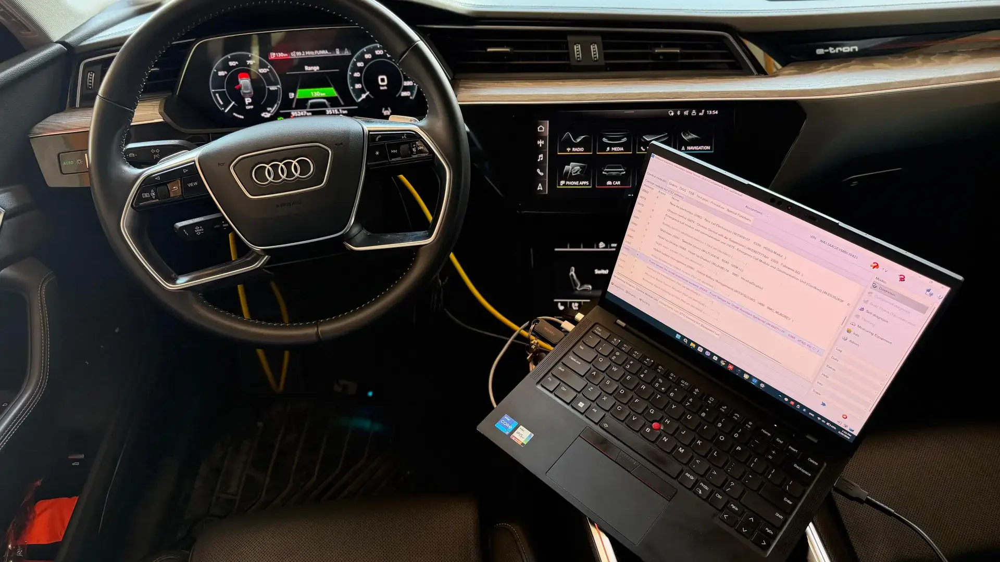
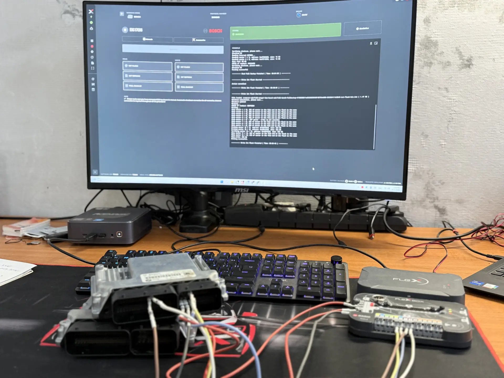
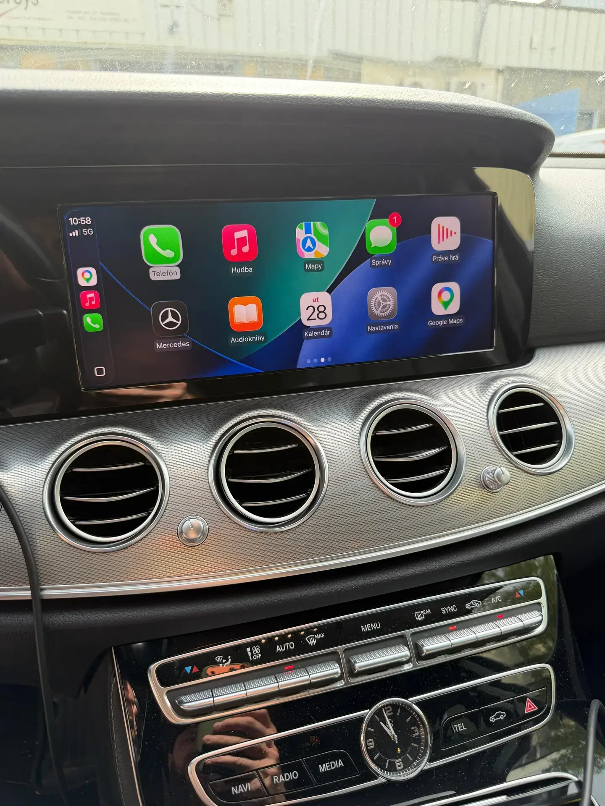

01 / 04IDENTIFY
Identifikácia pred zásahom
Diagnostikou overíme stav vozidla, presnú ECU/TCU verziu a vhodný spôsob práce. Existujúca mechanická chyba sa najprv rieši — tuning ju neskrýva.

GTIFAB • BRATISLAVA
Profesionálny chiptuning a kódovanie vozidiel. Viac výkonu, lepšia odozva, individuálne nastavenie.
24 mesiacov záruka na ECU a úpravu. Bezplatná doživotná obnova softvéru archivovaného pri úprave v GTIFAB.
+421 910 870 807
PREČO GTIFAB
Každú úpravu začíname kontrolou vozidla, zálohujeme pôvodný softvér a volíme postup podľa konkrétnej ECU. Výsledok nevzniká univerzálnym súborom, ale zodpovednou prácou s vaším vozidlom.
OD DÁT K VÝSLEDKU
Každé vozidlo má inú históriu, softvér a technický stav. Preto ukazujeme celý postup — nie iba konečný údaj.
Diagnostikou overíme stav vozidla, presnú ECU/TCU verziu a vhodný spôsob práce. Existujúca mechanická chyba sa najprv rieši — tuning ju neskrýva.
Pred úpravou archivujeme pôvodný softvér. Podľa riadiacej jednotky používame OBD, BENCH alebo BOOT a profesionálne MASTER nástroje.
Cieľom nie je najvyššie číslo za každú cenu. Výkon, krútiaci moment a odozvu nastavujeme s ohľadom na motor, prevodovku, hardvér a zamýšľané používanie.
Po zápise skontrolujeme vozidlo, vysvetlíme vykonanú prácu a odovzdáme jasné informácie o úprave, záruke aj možnosti návratu na originál.
Pošlite nám údaje o vozidle. Overíme možnosti, postup, cenu aj termín skôr, než sa rozhodnete.
Overiť moje vozidloNews.
Pracujeme s profesionálnymi zariadeniami svetových výrobcov.
MASTER
MASTER
MASTER
Bezpečné zvýšenie výkonu a krútiaceho momentu s ohľadom na spoľahlivosť.
Vypnutie systémov, riešenie problémov a optimalizácia softvéru.
VW, Audi, BMW, Mercedes, Škoda, SEAT a ďalšie značky.
Online a offline kódovanie pre Volkswagen, Audi, BMW, Mercedes, Škoda, SEAT/CUPRA a ďalšie.
Strata kľúča, nový kľúč, immo off/on, spárovanie po výmene RJ.
Vyberte si značku, model a motor a okamžite uvidíte originálny výkon a Stage 1 potenciál.
Softvérové zásahy do emisných alebo bezpečnostných systémov vykonávame iba v rozsahu povolenom platnými predpismi a podľa účelu použitia vozidla. Presnú cenu a dostupnosť potvrdíme vopred.
Overiť presnú cenuREÁLNA PRÁCA GTIFAB
Fotografie pochádzajú z našej práce. Presný rozsah a výsledok každej úpravy závisí od vozidla, jeho stavu a konkrétnej riadiacej jednotky.
Diagnostika, bezpečná záloha pôvodného softvéru a zvolený spôsob čítania alebo zápisu podľa typu ECU.
Práca priamo s riadiacimi jednotkami vozidla a nastavenie dostupných funkcií podľa konkrétnej výbavy.
Profesionálna diagnostika a práca so systémami nákladných vozidiel priamo podľa konkrétnej konfigurácie.

Aktivácia dostupných funkcií infotainmentu vrátane Apple CarPlay alebo Android Auto podľa hardvéru vozidla.
PRÍKLAD Z DATABÁZY
Orientačný potenciál pre verziu 265 hp. Presné hodnoty potvrdíme až po identifikácii vozidla a kontrole jeho technického stavu.
Ceny sú orientačné. Presnú cenu potvrdíme podľa vozidla a ECU.
od 219 €
Úprava výkonu a krútiaceho momentu. Záruka 2 roky.
od 269 €
Pokročilejšia úprava podľa hardvéru vozidla.
od 149 €
Softvérové riešenia problémov so systémami.
od 49 €
Comfort, svetlá, CarPlay, Start/Stop a ďalšie.
od 99 €
Nový kľúč, immo, spárovanie s vozidlom.
zdarma*
Pre úpravy vykonané v GTIFAB kedykoľvek zdarma. Pri cudzom softvéri cenu potvrdíme podľa ECU.
ZÁZNAMY Z DIELNE
Skutočné vozidlá, skutočná diagnostika a skutočné pracovné prostredie. Bez ilustračných fotografií z fotobanky.
SKÚSENOSTI ZÁKAZNÍKOV
Prečítajte si skúsenosti zákazníkov a aktuálne verejné hodnotenie priamo na Google.
Aktuálne hodnotenie, počet recenzií a ich plné znenie nájdete na verejnom Google profile.
Kontakt slúži iba na overenie recenzie a na webe ho nezverejňujeme. Recenziu pred publikovaním skontrolujeme.
OD PRVEJ SPRÁVY PO HOTOVÉ AUTO
Vopred viete, čo budeme robiť, koľko to bude stáť a čo dostanete po dokončení.
Pošlete nám značku, model, motor, rok výroby a ideálne VIN.
Pred zásahom skontrolujeme stav vozidla a identifikujeme ECU.
Archivujeme originál a zvolenou úpravu bezpečne zapíšeme profesionálnym nástrojom.
Po dokončení overíme výsledok a vysvetlíme všetko dôležité k vašej úprave.
PRED ÚPRAVOU
Jasné odpovede na najčastejšie otázky o chiptuningu, kódovaní a práci s ECU.
Áno, ak je vozidlo v dobrom technickom stave a úprava rešpektuje rezervy motora aj prevodovky. Pred úpravou kontrolujeme diagnostiku a nastavenie prispôsobujeme konkrétnemu vozidlu. Chiptuning však neopraví existujúcu mechanickú poruchu.
Bežná úprava trvá približne 1 až 3 hodiny. Presný čas závisí od typu riadiacej jednotky, spôsobu čítania a zápisu a od stavu vozidla.
Áno. Pred úpravou archivujeme pôvodný softvér riadiacej jednotky, aby bol dostupný na kontrolu alebo obnovenie.
Áno. Softvér archivovaný pri úprave v GTIFAB vám obnovíme bezplatne a doživotne. Pri cudzom softvéri postup a cenu najprv overíme.
Pracujeme s vozidlami Volkswagen, Audi, BMW, Mercedes-Benz, Škoda, SEAT, CUPRA a mnohými ďalšími značkami. Dostupnosť konkrétnej úpravy overíme podľa modelu, motora, roku výroby a typu ECU.
Nie pri každej úprave. Závisí to od vozidla, cieľa úpravy a požadovaného spôsobu overenia výsledku. Vhodný postup s vami dohodneme vopred.
Podľa typu riadiacej jednotky používame profesionálne metódy OBD, BENCH alebo BOOT. Pred zásahom vám vysvetlíme potrebný postup a potvrdíme cenu.
Na ECU a vykonanú softvérovú úpravu poskytujeme 24-mesačnú záruku. Konkrétny rozsah vám potvrdíme pri objednávke podľa vozidla a služby.
Nenašli ste odpoveď? Pošlite nám značku, model, motor a rok výroby.
Opýtať sa na WhatsAppDohodnite si termín alebo sa opýtajte na možnosti pre vaše vozidlo.
Pšeničná 12027/7A
821 06 Bratislava
Po – Pia: 08:00 – 16:00
So: 08:00 – 14:00
Ne: Zatvorené
IČO: 55900712
DIČ: 2122121870
IČ DPH: SK2122121870